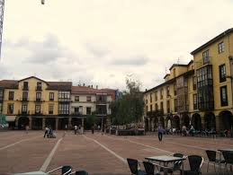

<body style="background-color:#FFD1BF;">
<table border="0" width= "100%" height= "100%">
<tr>
<td center colspan="2" >
<center>
<font color= "red" size= "1000000"
<tr>
	<h1><a href="torrelavega.html"> CANTABRIA
	</h1>
</td>
</tr>
</tr>
</font>
</center>
<tr>
<td  colspan="2" >
<center>
<font color="green" size ="1000000"
	<h2>TORRELAVEGA<br/><br/><br/>
	</h2>
</td>
</tr>
</center>
<tr>
<td valign= "top"> LA LECHERA:
</td>
<td>La plaza roja es un sitio mitico turistico en Torrelavega<br/><br/><br/>Plaza habitual de reuniones para tomar algo con tus amigos.<br/><br/><br/>Miticos domingos para tomar blancos y rabas en la plaza roja.
</td>
<td><a href="lechera.html"> La Lechera </a><br/><br/><br/>
<a href="plaza.html"> Plaza roja<br/><br/><br/>
</td>
</tr>
<tr>
<td valign= "top">FOTO PLAZA ROJA:
</td>
<td> 
<br/><br/><br/><br/><br/><br/><br/><br/><br/><br/>
</td>
</tr>
</table>